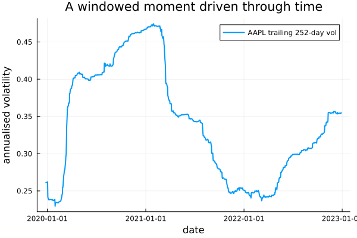

The source files can be found in examples/.
Windowed moment estimators
Every moment estimator in the previous pages used the whole return sample with equal weight on each observation. That is the right default when the data-generating process is stable, but markets are not: volatility clusters, correlations spike in crises, and a name's risk today looks nothing like its risk three years ago. Windowed estimators restrict — or reweight — the observations a moment is computed from, so the estimate reflects a chosen slice of history rather than the full sample.
PortfolioOptimisers wraps each moment estimator in a windowed variant — WindowedExpectedReturns, WindowedCovariance, WindowedVariance, WindowedCoskewness, WindowedCokurtosis — each carrying two controls:
window— either an integer (use the lastwindowobservations, a trailing recency window) or a vector of indices (use a specific, hand-picked sub-period).w— optional observation weights (eweightsand friends), to taper the influence of older observations without a hard cutoff.
Each call still returns one moment — a single mean vector or covariance matrix for the selected window. The estimator does not itself produce a rolling time series; sliding a window through time is something the caller drives, as the last section shows.
Reach for a windowed estimator when recency matters: when you believe the recent regime is more informative than the distant past (use a short trailing window or eweights), or when you want to condition a moment on a specific historical episode — a crisis, a calm stretch, a single earnings cycle (use an index-vector window). If you trust the full sample as representative, the plain estimators from the earlier pages are the right default.
using PortfolioOptimisers, CSV, TimeSeries, DataFrames, Statistics, StatsBase, StatsPlots, PrettyTables, LinearAlgebra, Clarabelresfmt = (v, i, j) -> begin if j == 1 return v else return isa(v, Number) ? "$(round(v * 100, digits = 2)) %" : v endend;1. Data
Windowing only earns its keep when there is enough history for the windows to differ, so unlike the other examples we take a longer slice — roughly four years of daily S&P 500 returns rather than one. The aligned timestamps (rd.ts) let us point windows at named calendar episodes later.
X = TimeArray(CSV.File(joinpath(@__DIR__, "..", "SP500.csv.gz")); timestamp = :Date)[(end - 1008):end]rd = prices_to_returns(X)ReturnsResult
nx ┼ 20-element Vector{String}
X ┼ 1008×20 Matrix{Float64}
nf ┼ nothing
F ┼ nothing
nb ┼ nothing
B ┼ nothing
ts ┼ 1008-element Vector{Date}
iv ┼ nothing
ivpa ┼ nothing
nz ┼ nothing
Z ┼ nothing
pnl ┴ nothing
2. Window length as a recency dial
The simplest control is an integer window: the estimator uses only the last window observations. Short windows track the current regime and react fast; long windows are stable but slow. We compute the annualised volatility of every asset across a sweep of trailing windows and against the full sample, then read off one name (AAPL) to see the dial in action.
annvol(ce) = sqrt.(diag(cov(ce, rd.X))) .* sqrt(252)windows = [60, 120, 252, 504]vol_table = DataFrame(:asset => rd.nx)vol_table[!, "full"] = annvol(PortfolioOptimisersCovariance())for w in windows vol_table[!, "win=$w"] = annvol(WindowedCovariance(; window = w))endpretty_table(vol_table; formatters = [resfmt], title = "Annualised volatility by trailing-window length") Annualised volatility by trailing-window length
┌────────┬─────────┬─────────┬─────────┬─────────┬─────────┐
│ asset │ full │ win=60 │ win=120 │ win=252 │ win=504 │
│ String │ Float64 │ Float64 │ Float64 │ Float64 │ Float64 │
├────────┼─────────┼─────────┼─────────┼─────────┼─────────┤
│ AAPL │ 34.53 % │ 40.44 % │ 36.04 % │ 35.51 % │ 30.8 % │
│ AMD │ 55.25 % │ 60.98 % │ 55.88 % │ 60.97 % │ 52.61 % │
│ BAC │ 37.69 % │ 32.82 % │ 31.68 % │ 32.39 % │ 29.23 % │
│ BBY │ 41.79 % │ 47.78 % │ 44.65 % │ 45.24 % │ 39.8 % │
│ CVX │ 37.91 % │ 28.43 % │ 32.32 % │ 32.86 % │ 28.97 % │
│ GE │ 44.54 % │ 31.84 % │ 32.04 % │ 34.79 % │ 33.67 % │
│ HD │ 30.03 % │ 31.31 % │ 30.02 % │ 31.25 % │ 26.31 % │
│ JNJ │ 20.61 % │ 15.17 % │ 15.9 % │ 17.39 % │ 16.01 % │
│ JPM │ 34.11 % │ 28.97 % │ 28.3 % │ 29.8 % │ 25.95 % │
│ KO │ 22.94 % │ 18.74 % │ 17.81 % │ 19.64 % │ 17.56 % │
│ LLY │ 31.56 % │ 23.58 % │ 26.98 % │ 27.22 % │ 29.5 % │
│ MRK │ 24.0 % │ 19.66 % │ 19.75 % │ 19.9 % │ 21.83 % │
│ MSFT │ 31.66 % │ 40.93 % │ 36.02 % │ 35.14 % │ 29.03 % │
│ PEP │ 23.04 % │ 19.3 % │ 18.12 % │ 19.42 % │ 17.24 % │
│ PFE │ 27.61 % │ 26.05 % │ 24.21 % │ 26.96 % │ 26.54 % │
│ PG │ 22.44 % │ 16.82 % │ 20.24 % │ 21.93 % │ 18.55 % │
│ RRC │ 75.02 % │ 59.63 % │ 58.11 % │ 62.82 % │ 63.79 % │
│ UNH │ 31.24 % │ 23.36 % │ 22.89 % │ 24.33 % │ 21.92 % │
│ WMT │ 23.4 % │ 23.02 % │ 26.0 % │ 26.68 % │ 22.23 % │
│ XOM │ 36.2 % │ 28.8 % │ 31.77 % │ 35.04 % │ 32.35 % │
└────────┴─────────┴─────────┴─────────┴─────────┴─────────┘The shortest window is the most reactive: on this slice the 60-day estimate sits well above the 504-day and full-sample estimates for most names, because the recent stretch was more turbulent than the four-year average. Lengthening the window pulls each estimate toward the full-sample number. The window length is a bias/variance dial — short means responsive but noisy, long means smooth but slow to acknowledge a new regime.
3. Exponential observation weights
A hard window cutoff is abrupt: the observation just inside the window counts fully, the one just outside not at all. Observation weights taper that boundary. eweights(1:T, λ) builds exponentially-decaying weights — the most recent observation weighs most, older ones fade geometrically — which we pass through the estimator's w field for a recency-tilted full-sample moment.
eweights returns a plain StatsBase.Weights, which does not support Bessel bias correction. The default covariance applies that correction and will error on weighted input, so set corrected = false on the inner SimpleCovariance when supplying w (frequency, analytic, or probability weights would be the alternative).
T = size(rd.X, 1)ew = eweights(1:T, 2 / (T + 1); scale = true)uncorrected = PortfolioOptimisersCovariance(; ce = GeneralCovariance(; ce = SimpleCovariance(; corrected = false)))vol_w = DataFrame("asset" => rd.nx, "full (equal)" => annvol(PortfolioOptimisersCovariance()), "eweights" => annvol(WindowedCovariance(; ce = uncorrected, w = ew)), "win=252" => annvol(WindowedCovariance(; window = 252)))pretty_table(vol_w; formatters = [resfmt], title = "Equal-weight vs exponentially-weighted vs trailing 252-day volatility")Equal-weight vs exponentially-weighted vs trailing 252-day volatility
┌────────┬──────────────┬──────────┬─────────┐
│ asset │ full (equal) │ eweights │ win=252 │
│ String │ Float64 │ Float64 │ Float64 │
├────────┼──────────────┼──────────┼─────────┤
│ AAPL │ 34.53 % │ 34.22 % │ 35.51 % │
│ AMD │ 55.25 % │ 55.31 % │ 60.97 % │
│ BAC │ 37.69 % │ 35.19 % │ 32.39 % │
│ BBY │ 41.79 % │ 42.24 % │ 45.24 % │
│ CVX │ 37.91 % │ 35.55 % │ 32.86 % │
│ GE │ 44.54 % │ 40.18 % │ 34.79 % │
│ HD │ 30.03 % │ 29.52 % │ 31.25 % │
│ JNJ │ 20.61 % │ 18.95 % │ 17.39 % │
│ JPM │ 34.11 % │ 31.85 % │ 29.8 % │
│ KO │ 22.94 % │ 21.2 % │ 19.64 % │
│ LLY │ 31.56 % │ 30.72 % │ 27.22 % │
│ MRK │ 24.0 % │ 23.1 % │ 19.9 % │
│ MSFT │ 31.66 % │ 32.06 % │ 35.14 % │
│ PEP │ 23.04 % │ 21.15 % │ 19.42 % │
│ PFE │ 27.61 % │ 27.82 % │ 26.96 % │
│ PG │ 22.44 % │ 21.33 % │ 21.93 % │
│ RRC │ 75.02 % │ 70.05 % │ 62.82 % │
│ UNH │ 31.24 % │ 27.94 % │ 24.33 % │
│ WMT │ 23.4 % │ 23.9 % │ 26.68 % │
│ XOM │ 36.2 % │ 35.61 % │ 35.04 % │
└────────┴──────────────┴──────────┴─────────┘The exponentially-weighted estimate lands between the full equal-weight number and the trailing 252-day window — it keeps every observation but lets recent ones dominate, a smoother recency tilt than a hard cutoff.
4. Conditioning on a named historical episode
An integer window always looks at the most recent observations. A vector window instead selects arbitrary indices, so we can estimate a moment conditioned on a specific episode. Here we contrast AAPL's volatility computed over the February–April 2020 COVID crash against a calm quarter in mid-2021 — the same estimator, two hand-picked regimes.
covid = findall(d -> Date("2020-02-19") <= d <= Date("2020-04-30"), rd.ts)calm = findall(d -> Date("2021-04-01") <= d <= Date("2021-06-30"), rd.ts)regime_vol = DataFrame("asset" => rd.nx, "crash (2020 Q1)" => annvol(WindowedCovariance(; window = covid)), "calm (2021 Q2)" => annvol(WindowedCovariance(; window = calm)), "full" => annvol(PortfolioOptimisersCovariance()))pretty_table(regime_vol; formatters = [resfmt], title = "Volatility conditioned on a crisis vs a calm window") Volatility conditioned on a crisis vs a calm window
┌────────┬─────────────────┬────────────────┬─────────┐
│ asset │ crash (2020 Q1) │ calm (2021 Q2) │ full │
│ String │ Float64 │ Float64 │ Float64 │
├────────┼─────────────────┼────────────────┼─────────┤
│ AAPL │ 76.92 % │ 21.05 % │ 34.53 % │
│ AMD │ 92.16 % │ 35.3 % │ 55.25 % │
│ BAC │ 102.88 % │ 21.97 % │ 37.69 % │
│ BBY │ 91.66 % │ 25.93 % │ 41.79 % │
│ CVX │ 113.99 % │ 25.01 % │ 37.91 % │
│ GE │ 97.24 % │ 26.61 % │ 44.54 % │
│ HD │ 87.69 % │ 18.17 % │ 30.03 % │
│ JNJ │ 59.52 % │ 13.19 % │ 20.61 % │
│ JPM │ 97.69 % │ 19.09 % │ 34.11 % │
│ KO │ 62.92 % │ 10.57 % │ 22.94 % │
│ LLY │ 66.46 % │ 31.89 % │ 31.56 % │
│ MRK │ 57.89 % │ 18.59 % │ 24.0 % │
│ MSFT │ 80.26 % │ 19.23 % │ 31.66 % │
│ PEP │ 75.02 % │ 12.35 % │ 23.04 % │
│ PFE │ 57.46 % │ 16.3 % │ 27.61 % │
│ PG │ 65.51 % │ 14.3 % │ 22.44 % │
│ RRC │ 140.81 % │ 67.61 % │ 75.02 % │
│ UNH │ 91.66 % │ 17.21 % │ 31.24 % │
│ WMT │ 58.42 % │ 15.28 % │ 23.4 % │
│ XOM │ 82.8 % │ 27.63 % │ 36.2 % │
└────────┴─────────────────┴────────────────┴─────────┘The crash window prices in several times the volatility of the calm window — a difference the full-sample estimate completely averages away. Index-vector windows are how you ask "what would my moments look like if the recent regime resembled that episode?"
5. Windowed estimators inside a prior
Windowed estimators slot into a prior exactly like their plain counterparts: set the me and ce fields of an EmpiricalPrior to windowed variants and feed the prior to an optimiser. Because the prior is now an estimator (not a precomputed result) we pass the ReturnsResult to optimise. We solve a MinimumRisk book for each window length and compare how diversified the result is.
slv = Solver(; name = :clarabel, solver = Clarabel.Optimizer, settings = Dict("verbose" => false), check_sol = (; allow_local = true, allow_almost = true))function windowed_minrisk(w) pe = EmpiricalPrior(; me = WindowedExpectedReturns(; window = w), ce = WindowedCovariance(; window = w)) return optimise(MeanRisk(; obj = MinimumRisk(), opt = JuMPOptimiser(; pe = pe, slv = slv)), rd)endfull_book = optimise(MeanRisk(; obj = MinimumRisk(), opt = JuMPOptimiser(; pe = EmpiricalPrior(), slv = slv)), rd)books = [windowed_minrisk(w) for w in windows]concentration = DataFrame("window" => ["full"; string.(windows)], "max weight" => [maximum(full_book.w); [maximum(b.w) for b in books]], "names held" => [count(>(1e-4), full_book.w); [count(>(1e-4), b.w) for b in books]])concfmt = (v, i, j) -> j == 2 && isa(v, Number) ? "$(round(v * 100, digits = 2)) %" : vpretty_table(concentration; formatters = [concfmt], title = "Minimum-risk concentration by estimation window")Minimum-risk concentration by estimation window
┌────────┬────────────┬────────────┐
│ window │ max weight │ names held │
│ String │ Float64 │ Int64 │
├────────┼────────────┼────────────┤
│ full │ 27.63 % │ 8 │
│ 60 │ 34.1 % │ 5 │
│ 120 │ 44.56 % │ 7 │
│ 252 │ 36.97 % │ 10 │
│ 504 │ 29.54 % │ 14 │
└────────┴────────────┴────────────┘Broadly, the shortest windows produce the most concentrated minimum-risk books — a noisy short-window covariance lets the optimiser pile into whatever handful of names looked least risky recently — while longer windows and the full sample spread across more names. The relationship is not perfectly monotone (the 120-day book is the most concentrated here), which is itself the lesson: a short window is a less stable input, and the optimiser's concentration inherits that instability.
6. Driving a window forward in time
The estimator computes one window per call, but a trailing window evaluated at every date traces the evolution of a moment — we drive the slide, the estimator does each window. The loop below recomputes a 252-day trailing volatility for AAPL at each subsequent date; the resulting series is the time-varying risk the full-sample estimate flattens into a single number.
roll = 252rolling_vol = [sqrt(cov(WindowedCovariance(; window = roll), rd.X[1:t, :])[1, 1]) * sqrt(252) for t in roll:T]rolling_dates = rd.ts[roll:T]plot(rolling_dates, rolling_vol; label = "AAPL trailing 252-day vol", xlabel = "date", ylabel = "annualised volatility", legend = :topright, lw = 2, title = "A windowed moment driven through time")
The spike through early 2020 is the COVID crash entering the trailing window; the decay afterward is that same stretch ageing out 252 days later. This is the picture a windowed estimator gives you one slice at a time — and the motivation for reaching for one at all.
This page was generated using Literate.jl.